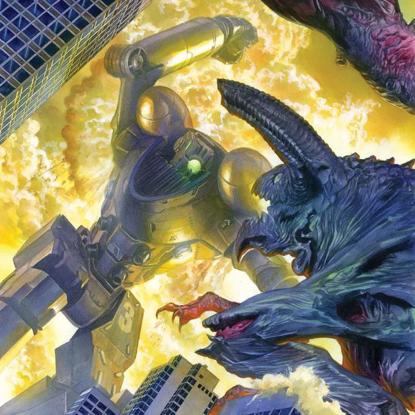

Legfrissebb Hírek
Előzmény sorozat érkezhet az Amazonon.

Régóta nem láthatták a Pacific Rim rajongói élőszereplős Kaiju- káoszt, de ez hamarosan megváltozhat az Amazonnak köszönhetően. A Legendary Television által tavaly bejelentett előzménysorozat hivatalosan is megérkezett az Amazon MGM Studioshoz, és a két óriás együtt adaptálja a projektet a Prime Video számára. A Pacific Rim természetesen a 2013-as Guillermo del Toro klasszikus, amelyben az emberiség a Jaegereknek nevezett gigantikus humanoid mechák segítségével küzdötte le a Kaiju-záport.